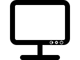
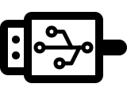
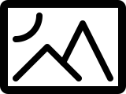
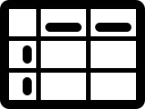
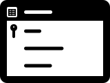
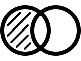
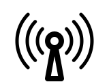
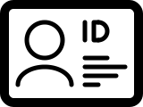

Bevezetés az informatikába
Hardver
Neumann-elvek
Központi egység
Kijelző
Nyomtató
Billentyűzet
Háttértárak
Buszrendszer
Szoftver
Adat
Szövegszerkesztés
Képszerkesztés
Táblázatkezelés
Adatbázis-kezelés
Digitalizálás
Számrendszerek
Karakterkódolás
Színkódolás
Logikai műveletek
Kommunikáció
Hálózatok
Felhasználó azonosítás
Kislexikon
Kulcsszavak
Rövidítések
Történelem
§
@
 Központi egység
Központi egység Adat
Adat Szövegszerkesztés
Szövegszerkesztés